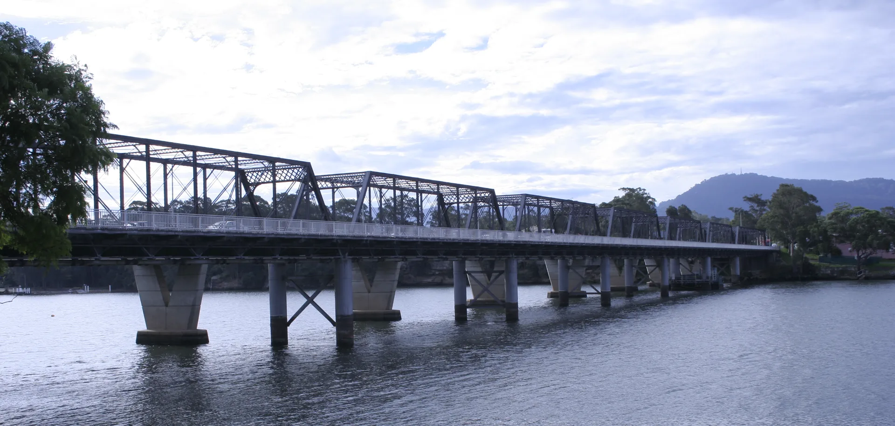
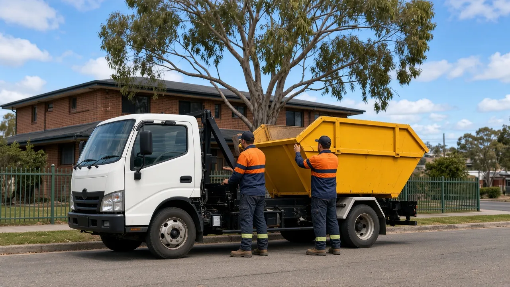
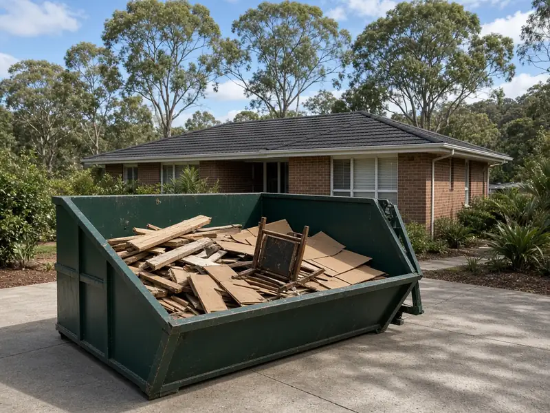
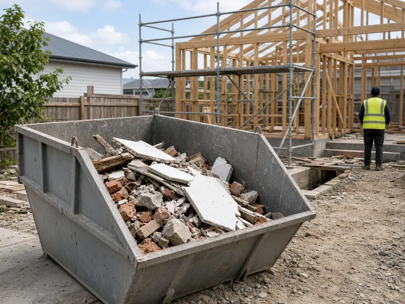
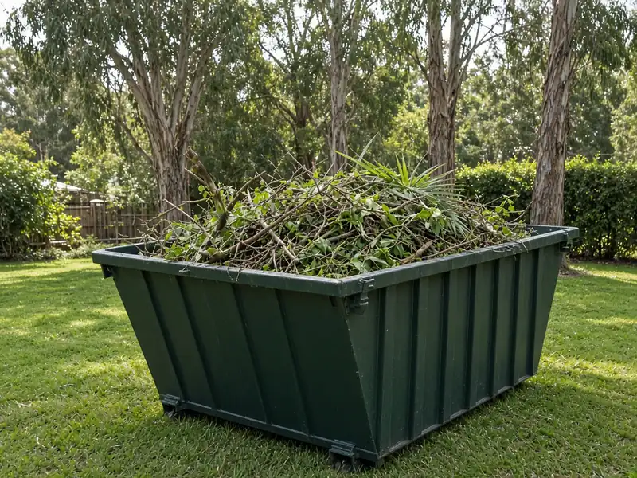
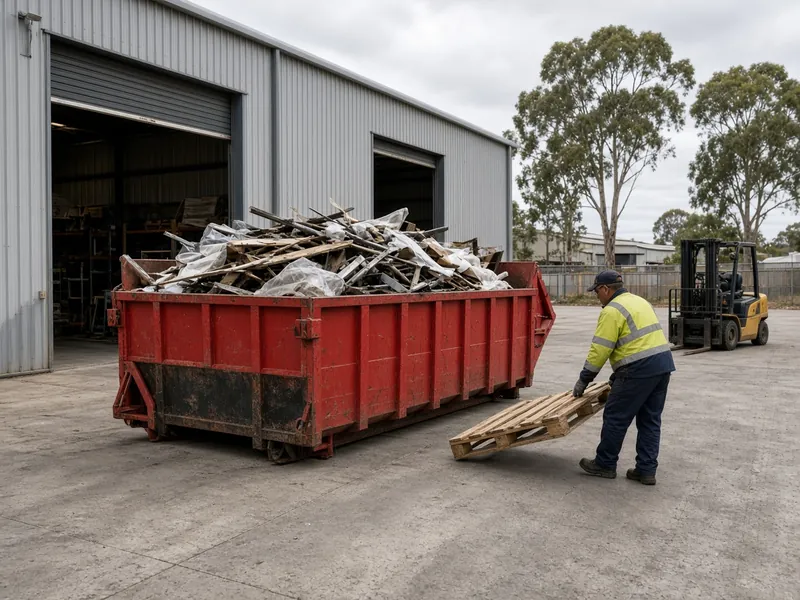
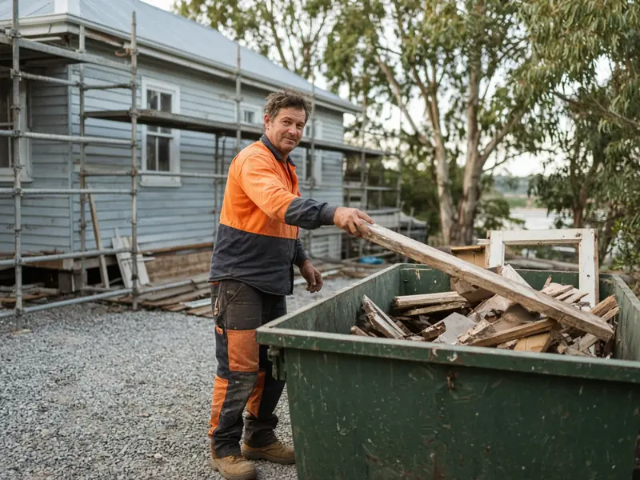

Skip Bins Nowra: Skip Bin Hire Quotes Across the Shoalhaven
Cleaning out the garage, renovating the bathroom or clearing a block after a storm? Tell us your suburb, the skip size and what you're throwing out, and we'll connect you with a local skip bin operator for a free, no-obligation quote.
Updated 23 October 2026
Get a free skip bin quote
Photo: Grahamec, CC BY-SA 3.0 (cropped)

- Free quote for your exact job
- One local operator, not a call-centre auction
- Nowra, Bomaderry, Berry, Bay & Basin and surrounds
- No obligation to book
How it works
- 1
Tell us about the job
Choose your suburb, skip size and waste type in the quote form, then add your contact details.
- 2
We pass it to one local operator
Your enquiry goes to one skip bin company that services your part of the Shoalhaven, not to a list of firms, so you get a competitive price without being chased by five companies.
- 3
They confirm price and delivery
You deal with the operator directly and only book if the quote suits you.
Nowra Skip Bins is a referral and quote service run by Raf Web Studio. We don't own trucks or bins, and we don't take payments. The operator who quotes you supplies the skip and sets the price and hire terms.
Skip bin size guide
Skips are measured in cubic metres (m³). The comparisons below are volume guides only. Wheelie bins assume a standard 240-litre bin (0.24 m³), so the number is the skip size divided by 0.24, rounded. Trailer loads assume a 6×4 box trailer loaded level with its sides, which holds roughly 1 m³. Shapes and dimensions vary between operators, so we don't list exact measurements. If you're unsure, going one size up is usually cheaper than booking a second bin.


Illustrations are approximate and not to an exact scale.
Mini skip
≈ 8 wheelie bins · ≈ 2 trailer loads
Garage or shed clean-out, a small garden tidy-up, or small amounts of heavy waste such as soil or broken pavers.
Small skip
≈ 13 wheelie bins · ≈ 3 trailer loads
A decent backyard clean-up, clearing one or two rooms, or a weekend of pruning.
Bathroom or laundry reno
≈ 17 wheelie bins · ≈ 4 trailer loads
Bathroom or laundry renovations, old carpet and underlay, or a small house clean-out.
Kitchen reno or big clean-up
≈ 25 wheelie bins · ≈ 6 trailer loads
Old cabinets and benchtops, furniture from several rooms, or a large yard clean-up.
House clear-out
≈ 33 wheelie bins · ≈ 8 trailer loads
Moving house, a deceased estate clean-out, or a medium renovation with mixed building waste.
Large renovation
≈ 38 wheelie bins · ≈ 9 trailer loads
Bigger renovations, extensions, or a full clean-out with lots of bulky items.
Builders and big jobs
≈ 50 wheelie bins · ≈ 12 trailer loads
Building sites, demolishing a shed or deck, or large clean-ups. Needs good truck access.
Some operators also offer skip bags of around 1 m³ for small jobs and tight spaces. Heavy waste (soil, concrete, bricks, tiles) usually has to go in a smaller bin because of weight limits, even though it doesn't take up much room.
What can and can't go in a skip
Waste type matters as much as size. Operators sort and tip loads at licensed facilities, and each type of waste costs a different amount to dispose of. Being honest about what's going in gets you the right price and avoids surprise fees.
Usually accepted
- General household waste: furniture, toys, clothes, boxes, cupboard contents and general junk.
- Green waste: branches, leaves, lawn clippings, palm fronds and hedge trimmings (often cheaper on its own, with no dirt or rubbish mixed in).
- Renovation waste: timber, plasterboard, old cabinets, carpet, tiles and fittings.
- Heavy or clean fill: soil, sand, concrete, bricks, rock and pavers (often needs its own bin and has a lower weight limit).
- Scrap metal: old roofing, fencing, frames and outdoor furniture.
Not accepted, or extra charge
- Asbestos and fibro: never in a normal skip (see below).
- Tyres: usually banned or charged per tyre.
- Car and household batteries: a fire risk in a skip. Take them to a recycling drop-off instead.
- Gas bottles and aerosols: can explode when compacted.
- Paint, oils, chemicals and liquids: including pool chemicals and pesticides.
- Mattresses: often accepted for an extra fee.
- Food waste, medical waste and e-waste: check first. Many operators won't take TVs, computers or fluorescent tubes.
A note on asbestos
Many older Shoalhaven homes and sheds contain fibro, and it can contain asbestos. In NSW, asbestos must be wrapped, handled and disposed of under strict rules, and removing more than 10 square metres of bonded asbestos needs a licensed removalist. See SafeWork NSW's asbestos guidance. Some skip operators supply special asbestos bags or bins and transport them to an approved facility, but they won't remove it for you. If you suspect asbestos, say so when you ask for a quote.
For paint, gas bottles, batteries and household chemicals, check Shoalhaven City Council for local drop-off options and the NSW EPA for Household Chemical CleanOut events.
Skip bin prices in Nowra
There's no single price list for skip bins in Nowra. To give you a starting point, we noted the prices published online for the Nowra area. These are not our prices, and they're not a quote. Your price comes from the operator. Tell us about your job and we'll help you get a great deal from a local operator. Get a free quote.
| Skip size | "From" prices published by local and national hire sites | Range reported by a quote-comparison site |
|---|---|---|
| 2 m³ | $330–$373 | $225–$458 |
| 3 m³ | $420–$427 | $263–$536 |
| 4 m³ | $500–$535 | $345–$585 |
| 6 m³ | $630 | $488–$819 |
| 8 m³ | $750 | $518–$1,016 |
| 10 m³ | $870–$990 | $938 |
| 12 m³ | $990 | $615–$1,050 |
A guide only. Figures are taken from three public websites (two hire firms and one comparison site), which we don't name. Where a site said what was included, it was general waste and GST included. Sizes with only one published figure, such as 9 m³, are left out. Prices change, and they depend on your load.
What changes the price
Size
Bigger bins cost more, though the price per cubic metre usually drops as you go up.
Waste type and weight
Heavy waste and mixed building waste cost more to tip than light household or clean green waste.
Hire length and location
Extra days, outlying suburbs and tricky access can add to the price. So can extra-charge items such as mattresses and tyres.
To save money, pick the right size, keep green waste and heavy waste apart from general rubbish, and book only the days you need.
Putting a skip on the street: Shoalhaven City Council rules
Last checked: 23 Oct 2026
On your own property
The simplest spot is your own land: the driveway, front yard or a firm patch of lawn. Council's section 68 approval covers waste containers in a public place, so a skip that sits entirely on private property doesn't need it. Other rules can still apply, such as strata by-laws or conditions on a development consent, so check those if they're relevant. Put planks under the bin if you're worried about your driveway, and make sure the truck can get in without hitting gutters, wires or trees.
On the road, footpath or nature strip
Shoalhaven City Council's Local Approvals Policy lists "place a waste storage container in a public place" as an activity that needs Council approval under section 68 of the Local Government Act 1993. For a container on a road, Council says it considers the location, size and visibility of the bin. The policy sets out exemptions for some activities, but we couldn't find one that covers skips in a public place, so assume you need approval.
Before you book a skip on the street, check with Shoalhaven City Council about whether you need approval, how to apply, the cost and how long it takes. Call 1300 293 111, email council@shoalhaven.nsw.gov.au or visit the Shoalhaven City Council website. Mention it on the quote form too, because the operator may be able to advise on placement.
Wherever the skip goes, keep it clear of driveways, hydrants, bus stops and footpaths, and don't fill it above the rim.

Free skip bin quotes across the Shoalhaven
Get a free quoteAreas we cover around Nowra
We take skip bin enquiries from across the northern and central Shoalhaven. Choose your suburb on the form and we'll find an operator who services it.
Nowra and surrounds
- Nowra
- North Nowra
- South Nowra
- West Nowra
- Bomaderry
- Worrigee
- Cambewarra
- Terara
Berry and the north
- Berry
- Shoalhaven Heads
Greenwell Point and Culburra
- Greenwell Point
- Culburra Beach
Jervis Bay
- Callala Bay
- Huskisson
- Vincentia
Bay & Basin and Sussex Inlet
- St Georges Basin
- Sanctuary Point
- Basin View
- Erowal Bay
- Sussex Inlet
Out in Kangaroo Valley, on a rural block or further south? Choose "Other" and ask anyway. Outlying areas may cost more because of travel time, and rural driveways sometimes need a smaller truck, so tell us about access.
Common jobs in Nowra
Here's what skips are most often used for around the Shoalhaven, from home clean-outs to commercial and industrial sites, with a rough size for each. Sizes are guides only.

Home & garage clean-outsOld furniture, boxes and years of clutter. A 2–3 m³ skip covers most single garages. A whole house is more like 6–8 m³.
Renovations & buildersA bathroom usually fits in 3–4 m³ and a kitchen in about 6 m³. Small builds and decks need 8–12 m³. Choose "mixed renovation" so the quote allows for weight.
Green waste & storm clean-upsBranches and leaves after a storm or bushfire-season clearing. Green waste on its own is often cheaper to tip, so ask for a green-waste skip.
Commercial & industrialFactory and warehouse clean-ups, shop fit-out waste, pallets and scrap metal. Need a larger hook-lift bin? Ask in your quote request.Deceased estates and downsizing
Clearing a family home is hard enough without repeat trips to the tip. A 6–8 m³ skip on the driveway lets you work through it at your own pace. Ask about extra hire days when you get your quote.
Holiday house clean-outs
Getting a place in Culburra, Callala or around Jervis Bay ready for summer or for sale? Some holiday streets are narrow or steep, so tell us about access and whether you'll be there on delivery day.
Skip bin hire FAQ
How much does skip bin hire cost in Nowra?
It depends on the skip size, the type of waste, how heavy the load is, how long you keep the bin and where in the Shoalhaven it's going. Heavy waste such as soil, concrete and bricks costs more to tip than light household rubbish. Our price guide shows the published prices we found around Nowra, but your actual price comes from the operator's quote.
What size skip bin do I need?
As a rough guide, 2 to 3 cubic metres suits a garage or garden clean-up, 4 cubic metres suits a bathroom renovation or a small house clear-out, and 6 to 12 cubic metres suits a kitchen renovation, a full house clean-out or a building job. If you're unsure, choose "Not sure" on the form and describe what you're throwing out.
How many wheelie bins fit in a 4 m³ skip?
About 17, if you count a standard 240-litre wheelie bin as 0.24 cubic metres (4 ÷ 0.24 ≈ 16.7). It's a volume comparison only. Bulky items don't pack as neatly as loose rubbish, so allow some spare room.
How quickly can I get a skip in Nowra?
It depends on the operator and how busy they are. Next-day or two-day delivery is common, but it isn't guaranteed, especially in school holidays or after storms. Put your preferred date on the form and the operator will confirm what's possible.
How long can I keep the skip?
Most operators include a set number of hire days in the price and charge a daily fee if you keep the bin longer. Hire periods differ between operators, so tell us your dates and ask what's included when you get your quote.
Do I need a council permit to put a skip bin on the street in Nowra?
Usually, yes. Shoalhaven City Council's Local Approvals Policy lists placing a waste storage container in a public place as an activity that needs approval under section 68 of the Local Government Act 1993. Check with Council on 1300 293 111 before booking a skip on the road, footpath or nature strip. A skip that sits entirely on your own property isn't in a public place, so that particular approval doesn't apply.
Can I put asbestos in a skip bin?
Not in a normal skip. In NSW asbestos must be wrapped, handled and disposed of under strict rules, and removing more than 10 square metres of bonded asbestos needs a licensed removalist. Some operators supply special asbestos bags or bins, so mention it on the form.
Can I mix green waste and general waste?
You can, but it usually costs more. Clean green waste on its own is often cheaper to tip than a mixed load, so if you have a lot of garden waste it may be worth a separate green-waste skip. Choose the waste type that matches your load so the quote is accurate.
Is there a weight limit?
Yes. Every skip has a weight limit because of what the truck can legally carry, and it matters most with heavy waste like soil, concrete, bricks and tiles. A heavy load usually needs a smaller bin than you'd expect, and an overweight bin can attract extra fees. Ask the operator for the limit when you get your quote.
Can I put a mattress, tyres or a fridge in a skip?
Often not in a standard load. Many operators charge extra per mattress or tyre, and fridges and freezers may be refused because of the gases they contain. List these items on the form so the operator can tell you what they accept and what it costs.
Skip bin or skip bag: which is better?
A skip bag suits a small job, a tight space or a site where a truck can't put a bin down, and some operators collect it with a crane truck. A skip bin suits larger or heavier loads. Ask for both options if you're not sure.
Can the skip go on a sloping or gravel driveway, and do I need to be home?
Usually yes to both questions, within limits. Drivers need a firm, reasonably level spot with clear access and no low wires or branches. Very steep, soft or narrow driveways can be a problem. You often don't need to be home for delivery if you leave clear instructions. Mention any access issues on the form.
What about bigger bins for commercial or industrial sites?
Factories, warehouses, shop fit-outs and larger building sites sometimes use hook-lift bins, which are larger roll-on containers. If you need one, ask in your quote request and include the site, the waste (for example pallets, scrap metal or fit-out waste) and the space and access available. A smaller skip, or more than one, may also do the job.
Who will actually deliver my skip?
This website is a referral and quote service run by Raf Web Studio. We don't own trucks or bins. We pass your enquiry to one local skip bin operator who services your area, and they confirm the price, delivery time and hire terms with you directly.

Ready for a price on your skip?
Tell us your suburb, skip size and waste type. It takes about a minute, it's free, and you don't have to book. We pass your request to one local operator, who comes back to you with a price.